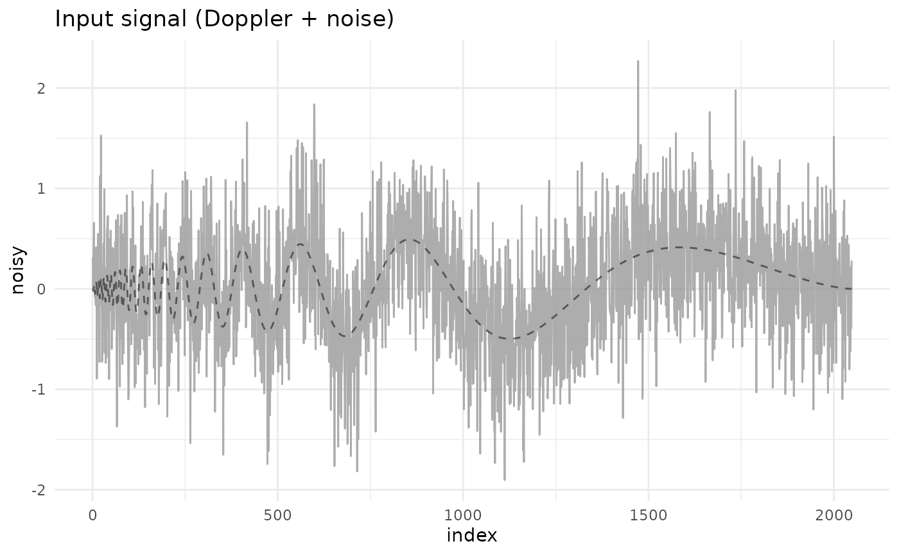
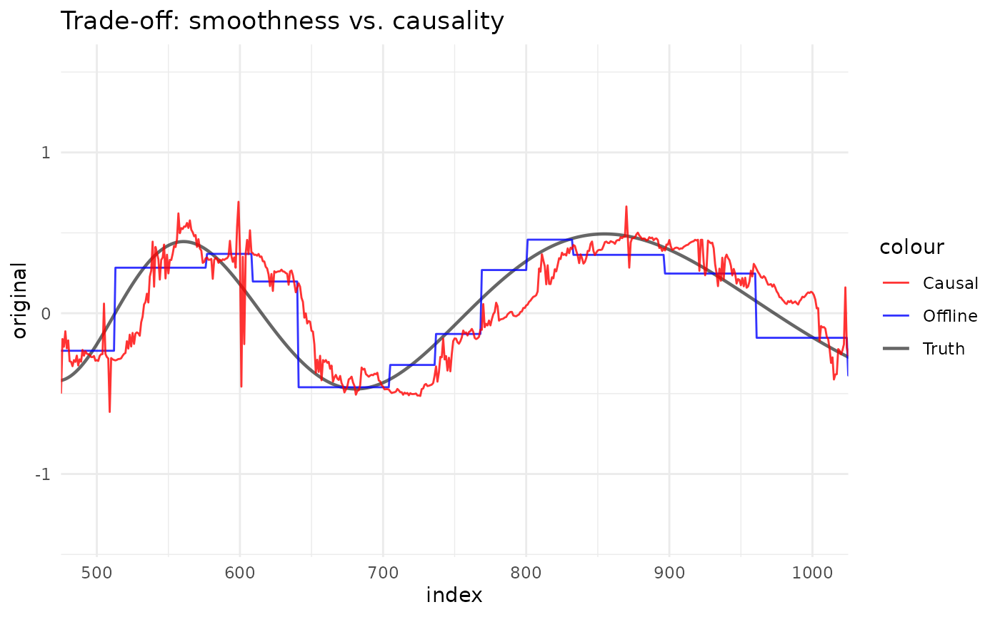

1. Introduction: offline, causal and online analysis
Source:vignettes/01_introduction.Rmd
01_introduction.RmdThe rLifting package provides a unified high-performance
framework for wavelet lifting transforms in R. Uniquely, it bridges the
gap between traditional offline statistical analysis and real-time
signal processing.
This vignette demonstrates the three core modes of operation using a Doppler signal:
- Offline (batch): global denoising using future information.
- Causal (batch): batched processing that respects time causality (no lookahead).
- Online (stream): point-by-point processing for real-time applications.
Setup and data
We utilize the doppler_example dataset included in the
package.
library(rLifting)
if (!requireNamespace("dplyr", quietly = TRUE) ||
!requireNamespace("ggplot2", quietly = TRUE)) {
knitr::opts_chunk$set(eval = FALSE)
message("Required packages 'dplyr' and 'ggplot2' are missing. Vignette code will not run.")
} else {
library(dplyr)
library(ggplot2)
}
#>
#> Attaching package: 'dplyr'
#> The following objects are masked from 'package:stats':
#>
#> filter, lag
#> The following objects are masked from 'package:base':
#>
#> intersect, setdiff, setequal, union
data("doppler_example", package = "rLifting")
# Visualize the noisy input
ggplot(doppler_example, aes(x = index, y = noisy)) +
geom_line(color = "grey60", alpha = 0.8) +
geom_line(aes(y = original), color = "black", alpha = 0.5, linetype = "dashed") +
theme_minimal() +
labs(title = "Input signal (Doppler + noise)")
1. Offline denoising (global)
In offline mode, the algorithm has access to the entire signal (past and future). This allows it to compute global thresholding statistics and perform non-causal lifting steps, resulting in the smoothest possible reconstruction.
Use case: historical data analysis, post-processing.
# Define the Wavelet Scheme (Haar for this example)
scheme = lifting_scheme("haar")
# Denoise using strict offline mode
# levels = floor(log2(n)) ensures maximum decomposition depth
offline_clean = denoise_signal_offline(
doppler_example$noisy,
scheme,
levels = floor(log2(nrow(doppler_example))),
method = "semisoft"
)2. Causal denoising (batch)
In causal mode, we process the history as if we were receiving it sequentially. The estimate at time depends only on . We use a sliding window of size to calculate local statistics (see Liu et al 2014).
Use case: backtesting trading strategies, simulating real-time systems on historical data.
# Causal Denoising with a window of 256 points
causal_clean = denoise_signal_causal(
doppler_example$noisy,
scheme,
window_size = 256,
levels = floor(log2(256)),
method = "semisoft"
)3. Online denoising (stream)
Online mode allows you to process data point-by-point as it arrives
from a sensor or API. It uses a C++ ring buffer to maintain
the sliding window state efficiently (amortized constant time per
update).
Use case: IoT sensors, live financial feeds, monitoring systems.
# Initialize the Stream Processor
processor = new_wavelet_stream(
scheme,
window_size = 256,
levels = floor(log2(256)),
method = "semisoft"
)
# Simulate streaming (vectorized loop for demonstration)
online_clean = numeric(nrow(doppler_example))
for (i in 1:nrow(doppler_example)) {
online_clean[i] = processor(doppler_example$noisy[i])
}Comparison
Combining all three views illustrates the trade-off. The offline method provides better smoothing (lower variance) because it “sees the future”. The causal/online methods are reactive but naturally exhibit a slight phase lag.
# Combine results
df_plot = doppler_example |>
mutate(
Offline = offline_clean,
Causal = causal_clean,
Online = online_clean
)
# Plot focusing on a specific section to see the lag
ggplot(df_plot, aes(x = index)) +
# Add Truth curve
geom_line(aes(y = original, color = "Truth"), linewidth = 0.8, alpha = 0.6) +
geom_line(aes(y = Offline, color = "Offline"), alpha = 0.8) +
geom_line(aes(y = Causal, color = "Causal"), alpha = 0.8) +
scale_color_manual(values = c("Truth" = "black", "Offline" = "blue", "Causal" = "red")) +
theme_minimal() +
labs(title = "Trade-off: smoothness vs. causality") +
coord_cartesian(xlim = c(500, 1000)) # Zoom in